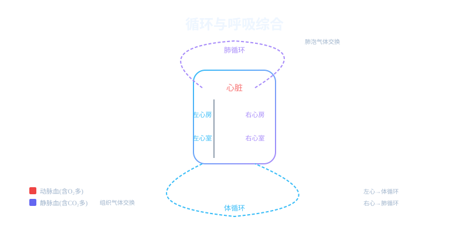

Interactive Canvas
红细胞双循环之旅
观察一个红细胞在体循环和肺循环中的旅程，注意颜色变化
点击按钮观察红细胞从左心室出发的完整旅程
一滴血从心脏出发，经过体循环和肺循环两条路线完成气体交换，再回到心脏——这趟旅程只需约一分钟。


选一个你关心的问题
选择或输入后，本课围绕你的问题展开。
心脏有几个腔？哪边壁最厚？
体循环是血液从左心室出发，经主动脉→各级动脉→全身毛细血管网→各级静脉→上下腔静脉→回到右心房的过程。在全身毛细血管处，血液中的氧气和营养物质透过薄壁进入组织细胞，同时组织细胞产生的二氧化碳和代谢废物进入血液。
但是：为什么经过体循环后，鲜红色的动脉血变成了暗红色的静脉血？
所以：学习体循环——理解血液如何在全身输送氧气并带走废物
体循环路径：
左心室 → 主动脉 → 各级动脉 → 全身毛细血管 → 各级静脉 → 上下腔静脉 → 右心房
⚡ 气体交换：O₂从血液→组织，CO₂从组织→血液
结果：动脉血(含氧多,鲜红) → 静脉血(含氧少,暗红)
肺循环是血液从右心室出发，经肺动脉→肺部毛细血管网→肺静脉→回到左心房的过程。路程较短但至关重要。在肺部毛细血管处，血液中的CO₂透过毛细血管壁和肺泡壁扩散进入肺泡，肺泡中的O₂则扩散进入血液，与血红蛋白结合。经过肺循环后，暗红色的静脉血重新变为鲜红色的动脉血。
肺循环路径：
右心室 → 肺动脉 → 肺部毛细血管 → 肺静脉 → 左心房
⚡ 气体交换：CO₂从血液→肺泡→呼出，O₂从肺泡→血液
结果：静脉血(含氧少,暗红) → 动脉血(含氧多,鲜红)
肺动脉里流的是静脉血！肺静脉里流的是动脉血！血管名称按结构分（离心/向心），血液名称按含氧量分。
体循环终点（右心房）连接肺循环起点（右心室）；肺循环终点（左心房）连接体循环起点（左心室）。形成完整闭合环路。
人体血液循环中发生两次气体交换，分别在肺泡处和组织细胞处。这两次交换的方向相反、作用互补，共同保证了组织细胞持续获得氧气并排出二氧化碳。交换的动力是气体的浓度差（扩散作用），不需要消耗能量。肺泡壁和毛细血管壁都只有一层上皮细胞，极薄的结构有利于气体迅速通过。组织处的毛细血管同样壁薄、管腔窄、血流慢，为物质交换创造了条件。
位置：肺泡与肺部毛细血管之间
方向：O₂ 肺泡→血液；CO₂ 血液→肺泡
结果：静脉血变为动脉血
原理：气体浓度差驱动扩散
位置：全身毛细血管与组织细胞之间
方向：O₂ 血液→组织；CO₂ 组织→血液
结果：动脉血变为静脉血
原理：组织细胞消耗O₂产生CO₂形成浓度差
这是本课最容易混淆的概念。很多同学错误地认为"动脉中流的就是动脉血"，实际上动脉血和静脉血的区分标准是含氧量，而不是所在的血管类型。动脉血是含氧量高、颜色鲜红的血液；静脉血是含氧量低、颜色暗红的血液。在肺循环中，肺动脉里流的恰恰是静脉血（因为从右心室出来的血刚经过体循环失去了大量氧气），而肺静脉里流的是动脉血（因为刚在肺部完成了气体交换获得了充足的氧气）。记住口诀：动脉血看含氧不看血管！肺动脉是个"叛徒"——虽然叫动脉却流静脉血。
含氧丰富，血红蛋白与O₂结合多，颜色鲜红。分布在体循环动脉、肺静脉、左心房、左心室中。
含氧较少，血红蛋白与O₂结合少，颜色暗红。分布在体循环静脉、肺动脉、右心房、右心室中。
观察一个红细胞在体循环和肺循环中的旅程，注意颜色变化
错：动脉血就是在动脉中流动的血液
对：动脉血按含氧量定义，肺静脉中也流动脉血
错：名字带"动脉"所以流动脉血
对：肺动脉流静脉血，因为来自右心室（含氧低）
错：图上左边就是左心
对：心脏图的左右与自身左右相反，面对图时右侧是左心
按顺序写出体循环的路径：左心室→____→____→____→右心房。
解释为什么说"肺动脉是个叛徒"？它的名称和血液类型有何矛盾？
运动时心跳加快、呼吸加深，从循环和气体交换角度解释原因。
血液流经肺部毛细血管后发生了什么变化？
体循环和肺循环构成完整的双循环系统，保证全身细胞持续获得氧气。
循环系统由心脏、血管和血液三大部分组成。心脏是动力泵，血管是运输通道，血液则是运输载体。心脏分为左右心房和左右心室四个腔室，通过规律收缩推动血液循环。动脉将血液从心脏输送到全身，静脉将血液送回心脏，毛细血管则是物质交换的场所。例如，当我们运动时，心脏跳动加快，将更多富含氧气的血液输送到肌肉。血液由血浆和血细胞组成，红细胞携带氧气，白细胞负责免疫防御，血小板参与止血。
人体血液循环分为体循环和肺循环两条路径。体循环从左心室开始，将富含氧气的动脉血通过主动脉输送到全身各组织，在毛细血管网进行气体和物质交换后，变成含二氧化碳较多的静脉血，通过上下腔静脉流回右心房。肺循环从右心室开始，将静脉血泵入肺动脉到达肺部，在肺泡毛细血管处释放二氧化碳并吸收氧气，变成动脉血后经肺静脉流回左心房。例如，当我们深呼吸时，肺循环效率提高，血液携氧量增加。这两个循环同时进行，相互衔接，共同完成气体交换和物质运输功能。
呼吸系统包括呼吸道和肺两部分。呼吸道由鼻、咽、喉、气管、支气管组成，具有加温、湿润和过滤空气的功能。肺是气体交换的场所，由大量肺泡组成，肺泡壁非常薄，外面包绕着丰富的毛细血管网。例如，在高原地区，空气稀薄，人体会增加呼吸频率以获得足够氧气。吸气时，膈肌收缩下移，肋间肌收缩使肋骨上提，胸腔容积增大，肺内气压降低，外界空气进入肺部。呼气时，这些肌肉舒张，胸腔容积减小，肺内气压升高，气体被排出。
气体交换遵循扩散原理，即气体分子从高浓度区域向低浓度区域移动。在肺泡处，氧气分压高于毛细血管血液，氧气从肺泡扩散入血；二氧化碳分压血液高于肺泡，二氧化碳从血液扩散入肺泡。例如，剧烈运动后肌肉会产生大量二氧化碳，使静脉血中二氧化碳浓度升高，促进其在肺部的释放。血红蛋白是红细胞中的特殊蛋白质，能与氧气可逆结合形成氧合血红蛋白，大大提高血液携氧能力。在组织毛细血管处，氧气从血液扩散进入组织细胞，二氧化碳则从细胞扩散进入血液。
循环系统和呼吸系统密切配合完成气体运输和交换。呼吸系统负责外界与血液间的气体交换（外呼吸），循环系统负责血液与组织细胞间的气体交换（内呼吸）。例如，登山时海拔升高，空气含氧量降低，呼吸会加深加快，同时心脏跳动加速，共同维持机体氧供应。这种协调受神经系统和体液调节，当血液中二氧化碳浓度升高时，会刺激呼吸中枢和心血管中枢，同时增加呼吸频率和心输出量。运动时，肌肉耗氧量增加，产生的二氧化碳也增多，两个系统会同步增强功能以满足需求。
动脉粥样硬化是最常见的心血管疾病，由于脂质在动脉壁沉积形成斑块，导致血管狭窄甚至堵塞。例如，长期高脂饮食、缺乏运动、吸烟等都可能导致此病。高血压是另一个常见问题，会增加心脏负担和血管损伤风险。预防措施包括：均衡饮食（减少盐和饱和脂肪摄入）、规律运动（如每天快走30分钟）、控制体重、戒烟限酒等。冠心病是心脏冠状动脉供血不足引起的疾病，严重时可导致心肌梗死。定期体检、控制血压血糖血脂、保持良好心态都是重要的预防手段。
慢性阻塞性肺病（COPD）是常见的呼吸系统疾病，表现为持续性气流受限，多由长期吸烟或空气污染引起。例如，吸烟者患COPD的风险是非吸烟者的10倍以上。哮喘是另一种常见病，特征是可逆性气道狭窄和炎症，发作时会出现喘息、气促等症状。预防呼吸系统疾病的方法包括：不吸烟并避免二手烟、减少空气污染暴露、接种流感疫苗和肺炎疫苗、进行呼吸锻炼（如腹式呼吸）等。在雾霾天气应减少户外活动，必要时佩戴口罩。保持室内通风、适度运动增强肺功能也很重要。
规律运动能显著改善循环和呼吸系统功能。有氧运动如跑步、游泳等可使心肌变得更强壮，每次搏动能泵出更多血液，静息心率因此降低。例如，长期锻炼者静息心率可能只有50-60次/分，而缺乏运动者可能在70次以上。运动还能增加毛细血管密度，改善血液循环效率。对呼吸系统而言，运动能增强呼吸肌力量，提高肺活量，使呼吸更深更有效。运动时，身体会调节呼吸频率和深度，精确匹配氧气需求和二氧化碳排出。建议每周进行至少150分钟中等强度有氧运动，并配合力量训练。
1. 你能说出心脏的四个腔室名称吗？2. 吸气时，哪些肌肉会收缩？3. 氧气在血液中主要如何运输？
1. 体循环和肺循环的起点和终点分别是什么？2. 肺泡处氧气和二氧化碳的扩散方向是怎样的？3. 列举两个预防心血管疾病的方法。
常见误区是认为动脉都携带含氧丰富的血液。错因在于忽视了肺动脉的特殊性。诊断时应强调肺动脉是唯一携带静脉血的动脉，而肺静脉是唯一携带动脉血的静脉。另一个误区是认为呼吸仅发生在肺部，实际上组织细胞与血液间的气体交换（内呼吸）同样重要。
设计一个实验探究运动前后心率变化：1. 测量静息心率；2. 进行3分钟跳绳；3. 立即测量运动后心率；4. 每隔1分钟测量一次直至恢复静息水平。分析运动对心血管系统的影响，并解释心率变化的原因。
先独立作答，再点选项查看对错与错因。
人体血液循环中，动脉血变成静脉血发生在哪个部位？
下列哪项不是呼吸道对吸入空气的处理功能？
心脏四个腔室中，肌肉壁最厚的是？
呼吸运动的直接动力来源于____的收缩和舒张。
答案：膈肌和肋间肌
膈肌和肋间肌的收缩舒张引起胸腔容积变化。
体循环的起点和终点分别是____和____。
答案：左心室、右心房
体循环路径：左心室→主动脉→全身毛细血管→上下腔静脉→右心房
关于肺泡适应气体交换的结构特点，下列说法正确的是？
设计实验探究不同运动强度与呼吸频率的关系